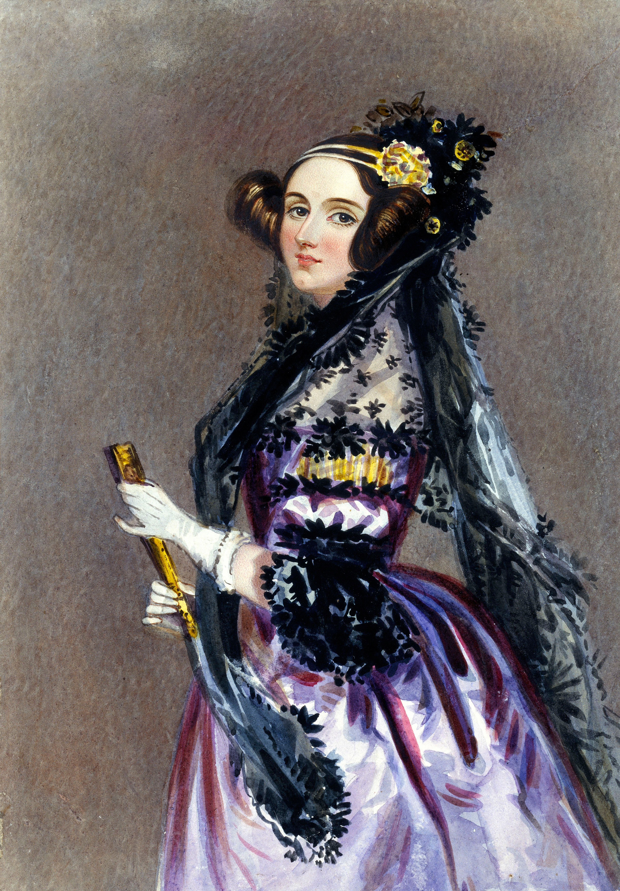
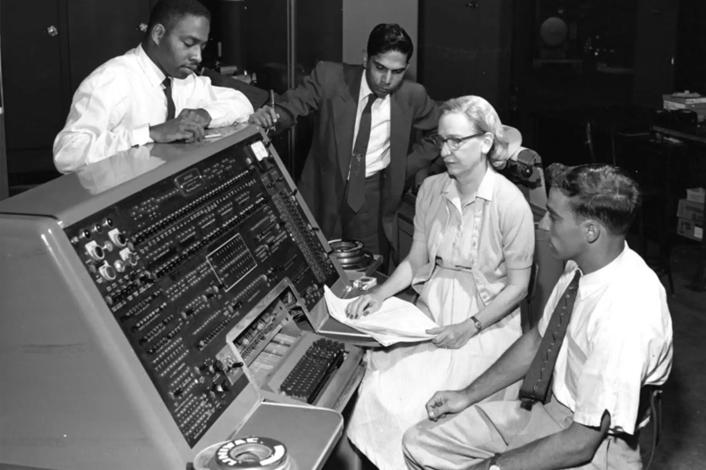
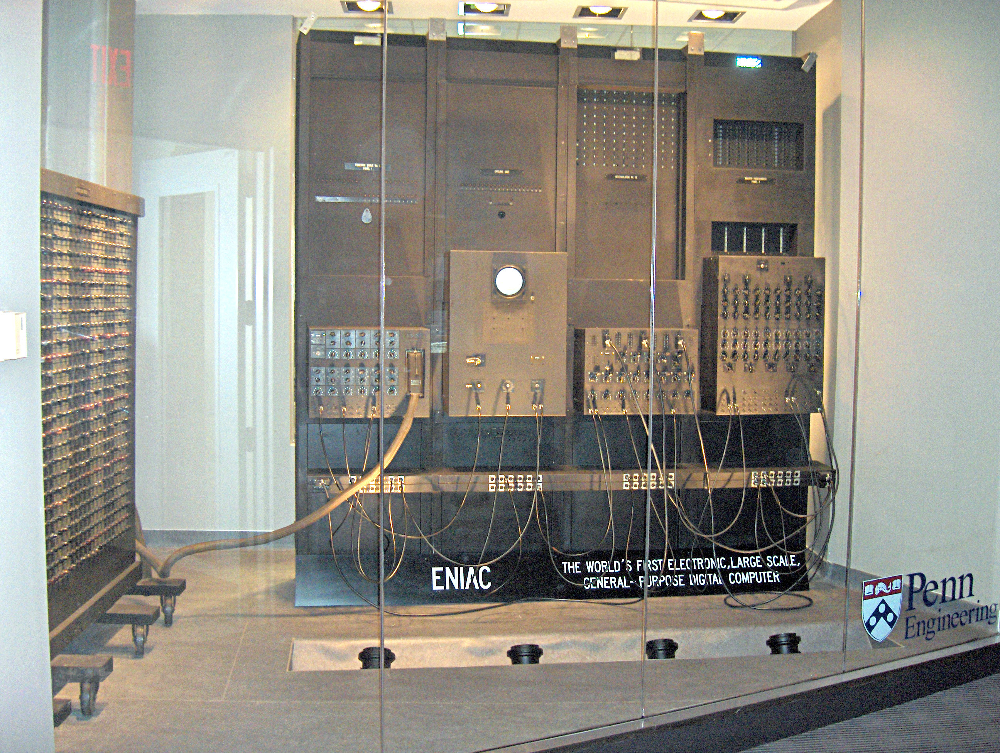

La historia de la programación
Un recorrido desde las primeras tarjetas perforadas hasta los lenguajes que usamos hoy.

Un recorrido desde las primeras tarjetas perforadas hasta los lenguajes que usamos hoy.

En 1801, Joseph Marie Jacquard creó un telar que usaba tarjetas perforadas para controlar los diseños de las telas. Las tarjetas daban instrucciones a la máquina, una idea parecida a la programación.
Más adelante, Charles Babbage diseñó la máquina analítica. En 1843, Ada Lovelace escribió instrucciones para que esta máquina hiciera cálculos. Por eso muchas personas la consideran la primera programadora.
En el siglo XX aparecieron los primeros ordenadores electrónicos. Uno de ellos fue ENIAC, presentado en 1946. Era muy grande y las personas tenían que conectar cables para programarlo.
En los años siguientes se crearon lenguajes como FORTRAN y COBOL. Estos ayudaron a escribir instrucciones de forma más sencilla para resolver problemas científicos y comerciales.



Con el paso del tiempo se crearon muchos lenguajes. C se usó para crear sistemas y programas. Después llegaron otros como Java, JavaScript y Python, que hoy se usan para páginas web, aplicaciones y análisis de datos.
La programación forma parte de muchas actividades cotidianas. Sirve para crear herramientas y resolver problemas, y continúa cambiando con las nuevas tecnologías.
La programación sigue evolucionando. Se están desarrollando lenguajes más fáciles de usar y herramientas que permiten crear programas sin necesidad de escribir código. Además, la inteligencia artificial está cambiando la forma en que se desarrolla software, haciendo que la programación sea más accesible para todos, aunque también plantea nuevos desafíos y preguntas sobre el futuro del los trabajos relacionados con la programación y la tecnología.